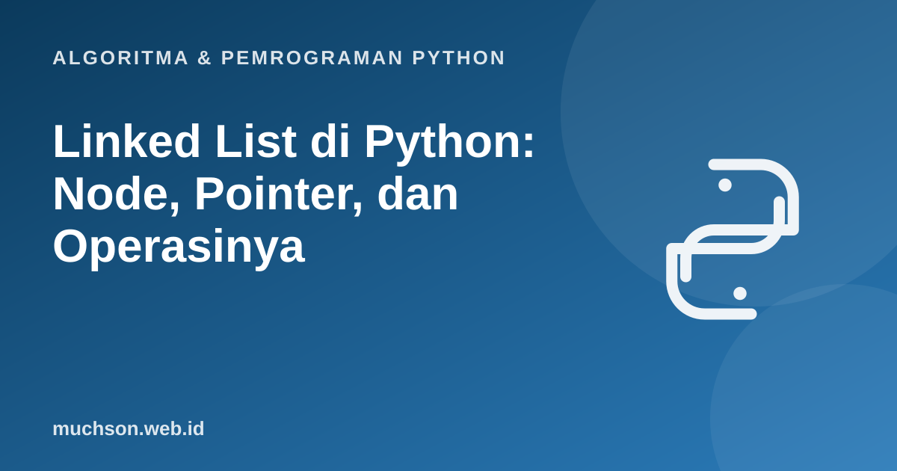

Beranda › Artikel › Algoritma & Pemrograman Python
Algoritma & Pemrograman PythonLinked List di Python: Node, Pointer, dan Operasinya
List Python menyimpan elemen berdampingan di memori sehingga akses indeks sangat cepat, tetapi menyisipkan di depan mahal. Linked list membalik pertukaran itu: sisip di depan murah, tetapi akses indeks mahal. Memahaminya melatih cara berpikir tentang referensi dan memori yang menjadi dasar struktur data lain seperti stack, queue, dan tree.
Sebaiknya sudah paham: kelas dan objek dasar, list Python, kompleksitas

Setelah membaca dan mencoba materi ini, Anda mampu:
- menjelaskan struktur node dan hubungannya melalui pointer (referensi)
- mengimplementasikan linked list tunggal dengan operasi sisip, cari, hapus, dan balik
- menganalisis kompleksitas tiap operasi dan membandingkannya dengan list Python
- menjelaskan kapan linked list lebih cocok dan kapan tidak
Struktur: node yang saling menunjuk
Setiap node menyimpan dua hal: data dan referensi (pointer) ke node berikutnya. List hanya perlu menyimpan head, referensi ke node pertama. Node terakhir menunjuk None.
Implementasi
class Node:
def __init__(self, data, next=None):
self.data = data
self.next = next
class LinkedList:
def __init__(self):
self.head = None
self.size = 0
def prepend(self, data): # sisip di depan: O(1)
self.head = Node(data, self.head)
self.size += 1
def append(self, data): # sisip di belakang: O(n)
baru = Node(data)
if self.head is None:
self.head = baru
else:
cur = self.head
while cur.next:
cur = cur.next
cur.next = baru
self.size += 1
def find(self, data): # O(n)
cur, i = self.head, 0
while cur:
if cur.data == data:
return i
cur, i = cur.next, i + 1
return -1
def remove(self, data): # O(n) mencari, O(1) mengaitkan ulang
prev, cur = None, self.head
while cur:
if cur.data == data:
if prev:
prev.next = cur.next
else:
self.head = cur.next
self.size -= 1
return True
prev, cur = cur, cur.next
return False
def reverse(self): # O(n), ruang O(1)
prev, cur = None, self.head
while cur:
cur.next, prev, cur = prev, cur, cur.next
self.head = prev
def __iter__(self):
cur = self.head
while cur:
yield cur.data
cur = cur.next
def __repr__(self):
return " -> ".join(map(str, self)) + " -> None"
ll = LinkedList()
for x in [5, 8, 3]:
ll.prepend(x)
ll.append(10)
print(ll, "| ukuran", ll.size)
print("cari 8:", ll.find(8), "| cari 99:", ll.find(99))
ll.remove(8); print("setelah hapus 8:", ll)
ll.reverse(); print("dibalik:", ll)3 -> 8 -> 5 -> 10 -> None | ukuran 4
cari 8: 1 | cari 99: -1
setelah hapus 8: 3 -> 5 -> 10 -> None
dibalik: 10 -> 5 -> 3 -> None
Coba sendiri
Membalik linked list: tiga pointer
Pembalikan menggeser arah semua pointer. Gunakan tiga penunjuk: prev, cur, dan simpan next sebelum mengubah arah. Pada kode di atas, penugasan bersamaan cur.next, prev, cur = prev, cur, cur.next melakukan semuanya dalam satu baris.
Linked list vs list Python
| Operasi | List Python (array dinamis) | Linked list tunggal |
|---|---|---|
| Akses indeks i | O(1) | O(n) |
| Sisip di depan | O(n) | O(1) |
| Sisip di belakang | O(1) amortisasi | O(n), atau O(1) dengan pointer tail |
| Sisip di tengah (sudah memegang posisinya) | O(n) | O(1) |
| Cari nilai | O(n) | O(n) |
| Memori | Padat, ramah cache | Overhead pointer per node, tersebar |
Dalam praktik, list Python (array dinamis) hampir selalu lebih cepat karena data berdampingan di memori (ramah cache). Linked list lebih penting sebagai konsep: dasar untuk stack, queue, graf berdaftar tetangga, dan struktur di sistem operasi. Untuk antrean Python, gunakan collections.deque.
Varian
1. Tulis metode panjang_rekursif(node) yang menghitung panjang list secara rekursif.
def panjang(node): return 0 if node is None else 1 + panjang(node.next). Hati-hati: kedalaman rekursi sebesar panjang list.2. Tulis metode yang mengembalikan elemen tengah list dalam satu kali lewat.
3. Mengapa menghapus node dengan remove harus mengingat node sebelumnya (prev)?
4. Hitung jumlah langkah penelusuran untuk append pada list berisi 1000 node tanpa tail.
- Linked list: rangkaian node berisi data dan pointer next; hanya head yang disimpan.
- Sisip di depan O(1); akses indeks, cari, dan sisip di belakang tanpa tail O(n).
- Pembalikan memakai tiga penunjuk dalam O(n) waktu dan O(1) ruang.
- Di Python, list bawaan lebih cepat; linked list penting untuk memahami referensi dan struktur data lanjutan.
Tanya jawab
Apa bedanya pointer di Python dengan di C?
Bagaimana mencegah kebocoran memori pada list yang sangat panjang?
Apakah deque sama dengan linked list?
Referensi
- Cormen, Leiserson, Rivest, Stein, Introduction to Algorithms (edisi ke-4, MIT Press, 2022)
- Robert Sedgewick dan Kevin Wayne, Algorithms (edisi ke-4), materi pendamping algs4.cs.princeton.edu
- Dokumentasi Python: collections.deque
- Dokumentasi Python: Classes (tutorial)
- Python Wiki: TimeComplexity